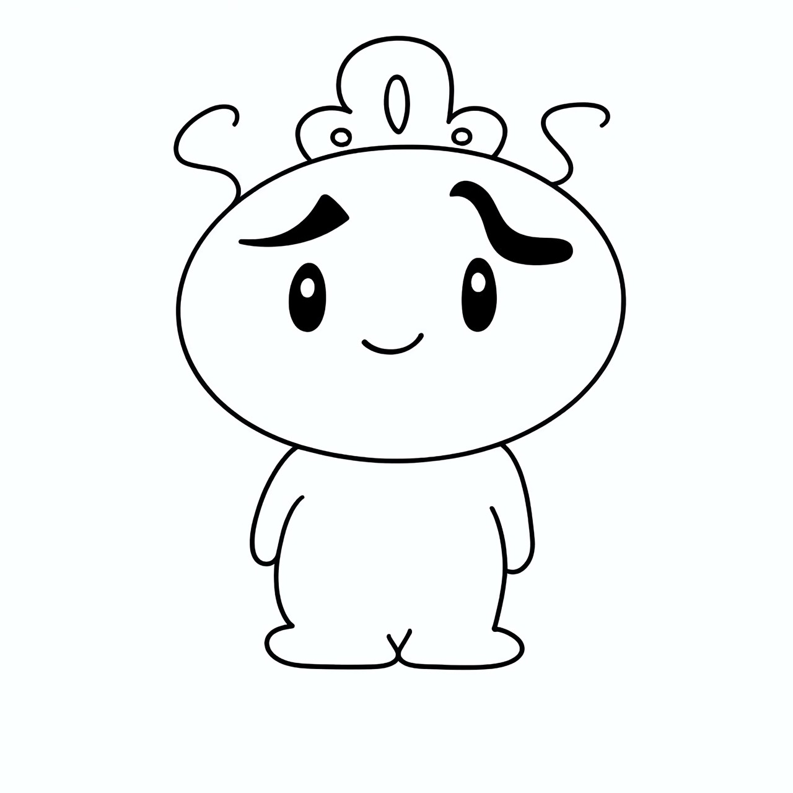
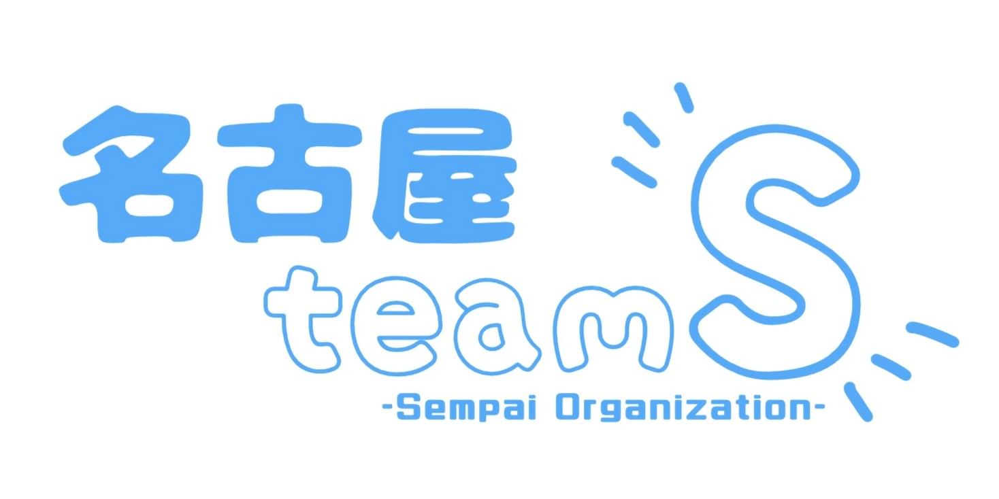
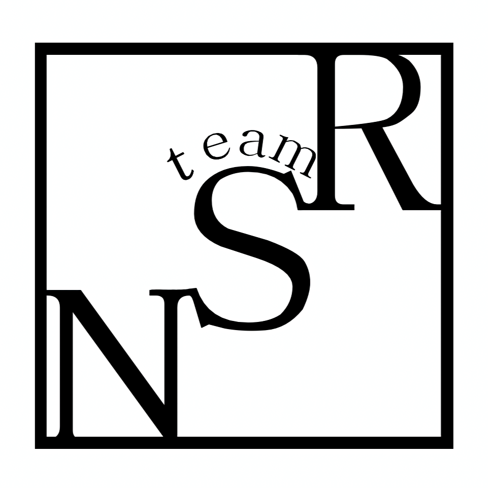

トップ/ロゴとアイコン
マスコットキャラクター【エスまる】
キャラクターには、それぞれの部位に様々な意味が込められています。
- 【エス】の意味：絆交流のセンパイが集まっている団体なので「エス」としました。
- 【まる】の意味：名古屋と陸前高田の絆がこれからも繋がっていくという輪のイメージから「まる」としました。
- 【外見】の意味：触覚がエスになっています。眉毛は名古屋市の市章のような形になっています。頭には一本松をイメージした松がのっています。
ネームロゴ
ネームロゴには・・・という意味が込められています。
団体アイコン
アイコンには、Ｒ（陸前高田）とＮ（名古屋）をＳ（センパイ）が繋ぐという意味が込められています。
団体カラー
名古屋と陸前高田は遠くても空で繋がっているという意味が込められています。空はどこまでも広がっているという前向きな意味も込められています。
お問合せ
イベントや学校での、防災/減災に関する講演・出展・企画のご依頼をお待ちしております。ご希望の方は、下記mailまでお気軽にご連絡いただけますと幸いです。
全体mail
nagoyateamsince20241215@gmail.com